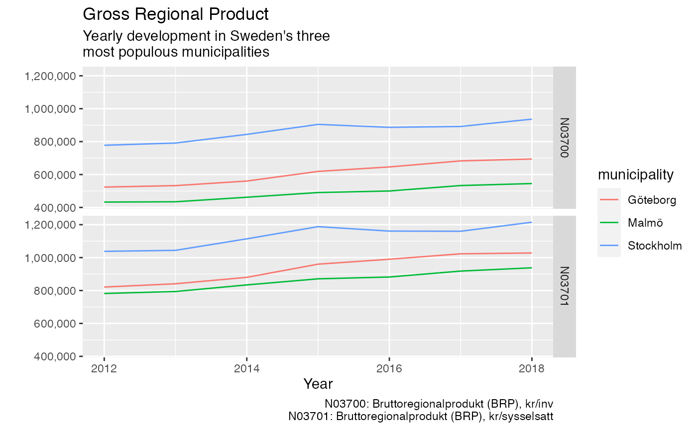

This vignette provides a quick start guide to get up and running with rKolada as fast as possible. For a more comprehensive introduction to the rKolada package, see Introduction to rKolada.
In this guide we walk you through five steps to download, inspect and search through Kolada metadata. We then use our search results to download data from Kolada and plot it.
Kolada contains five different types of metadata entities:
kpi: Key Performance Indicatorsmunicipality: Municipalitiesou: Operating Unit, a subunit of municipalitieskpi_groups: Thematic groupings of KPIsmunicipality_groups: Thematic groupings of municipalitiesTo obtain data using rKolada it is usually a good idea to start by exploring metadata. rKolada comes with convenience functions for each of the five above mentioned entities. These functions are all names get_[entity]() and can be called as follows. The cache parameter allows you to temporarily store results on disk to avoid repeated calls to the API in case you need to re-run your code:
kpis <- get_kpi(cache = FALSE)
munic <- get_municipality(cache = FALSE)If you have already familiarised yourself with the Kolada API (e.g. by reading the official docs on GitHub) you can access the full metadata API using get_metadata().
Metadata tables are stored as regular tibbles so you can start inspecting them by simply viewing them in RStudio. For example, the KPI metadata we downloaded looks like this:
dplyr::glimpse(kpis)
#> Rows: 5,083
#> Columns: 13
#> $ auspices <chr> "E", "E", "X", NA, NA, NA, "X", NA, "X", "X", NA…
#> $ description <chr> "Personalkostnader kommunen totalt, dividerat me…
#> $ has_ou_data <lgl> FALSE, FALSE, FALSE, FALSE, FALSE, FALSE, FALSE,…
#> $ id <chr> "N00002", "N00003", "N00005", "N00009", "N00011"…
#> $ is_divided_by_gender <int> 0, 0, 0, 0, 0, 0, 0, 0, 0, 0, 0, 0, 0, 0, 0, 0, …
#> $ municipality_type <chr> "K", "K", "K", "K", "K", "K", "K", "K", "K", "K"…
#> $ operating_area <chr> "Kommunen, övergripande", "Kommunen, övergripand…
#> $ ou_publication_date <chr> NA, NA, NA, NA, NA, NA, NA, NA, NA, NA, NA, NA, …
#> $ perspective <chr> "Resurser", "Resurser", "Resurser", "Resurser", …
#> $ prel_publication_date <chr> "2021-04-06", "2021-04-06", "2021-04-06", NA, NA…
#> $ publ_period <chr> "2020", "2020", "2020", "2020", NA, NA, NA, NA, …
#> $ publication_date <chr> "2021-08-31", "2021-08-31", "2021-08-31", "2021-…
#> $ title <chr> "Personalkostnader som andel av verksamhetens ko…But rKolada also comes with a set of convenience functions to simplify the task of exploring KPI metadata. kpi_search() filters down a list of KPIs using a search term, and kpi_minimize() can be used to clean the KPI metadata table from columns that don’t contain any information that distinguish KPIs from each other:
# Get a list KPIs matching a search for "BRP" (Gross regional product)
kpi_res <- kpis %>%
kpi_search("BRP") %>%
kpi_minimize(remove_undocumented_columns = TRUE, remove_monotonous_data = TRUE)
dplyr::glimpse(kpi_res)
#> Rows: 2
#> Columns: 5
#> $ id <chr> "N03700", "N03701"
#> $ title <chr> "Bruttoregionalprodukt (BRP), kr/inv", "Bruttoregiona…
#> $ description <chr> "BRP dividerat med antal invånare i det geografiska o…
#> $ publ_period <chr> "2020", "2019"
#> $ publication_date <chr> "2021-02-22", "2020-12-13"Let’s say we are interested in retrieving data for four Swedish municipalities. We thus want to create a table containing metadata about these four municipalities:
munic_res <- munic %>%
# Only keep municipalities (drop regions)
municipality_search("K", column = "type") %>%
# Only keep Stockholm, Gothenburg and Malmö
municipality_search(c("Stockholm", "Göteborg", "Malmö"))
dplyr::glimpse(munic_res)
#> Rows: 3
#> Columns: 3
#> $ id <chr> "1480", "1280", "0180"
#> $ title <chr> "Göteborg", "Malmö", "Stockholm"
#> $ type <chr> "K", "K", "K"In addition to the information provided about every KPI in the title and description columns of a KPI table, kpi_bind_keywords() can be used to create a rough summary of every KPI creating a number of keyword columns. The function kpi_describe() can be used to print a huamn readable table containing a summary of a table of KPIs. For instance, by setting the knitr chunk option results='asis', the following code renders a Markdown section that is automatically inluded as a part of the HTML that renders this web page:
kpi_res %>%
kpi_bind_keywords(n = 4) %>%
kpi_describe(max_n = 1, format = "md", heading_level = 4, sub_heading_level = 5)BRP dividerat med antal invånare i det geografiska området. Bruttoregionprodukt (BRP) är den regionala motsvarigheten till bruttonationalprodukt (BNP) mätt från produktsidan: värden av all produktion av varor och tjänster i en region. Nyckeltalet visar den ekonomiska utvecklingen inom det geografiska området. 2020 gjorde SCB en översyn av BRP vilket resulterade i en revidering av historisk data vilket innebär att även den data som finns i Kolada blivit reviderad historiskt. Revideringen påverkar främst nivåerna och i mindre grad utveckling över tid. De äldre tidsserierna samt mer information finns på SCB:s hemsida. Senaste års uppgifter är preliminära till nästa års publicering. Källa: SCB
Once we have settled on what KPIs we are interested in the next step is to download actual data from Kolada. Use get_values() to do this. To download data from the Kolada API you need to provide at least two of the following parameters:
kpi: One or a vector of several KPI IDsmunicipality: One or a vector of several municipality IDs or municipality group IDsperiod: The years for which data should be downloaded.The ID tags for KPIs and municipalities can be extracted using the convenience functions kpi_extract_ids() and municipality_extract_ids():
kld_data <- get_values(
kpi = kpi_extract_ids(kpi_res),
municipality = municipality_extract_ids(munic_res),
period = 1990:2019,
simplify = TRUE
)Setting the simplify parameter to TRUE, again, makes results more human readable, by removing undocumented columns and relabeling data with human-friendly labels.
Finally, time to inspect our data:
# Visualise results
library("ggplot2")
ggplot(kld_data, aes(x = year, y = value)) +
geom_line(aes(color = municipality)) +
facet_grid(kpi ~ .) +
scale_y_continuous(labels = scales::comma) +
labs(
title = "Gross Regional Product",
subtitle = "Yearly development in Sweden's three\nmost populous municipalities",
x = "Year",
y = "",
caption = values_legend(kld_data, kpis)
)